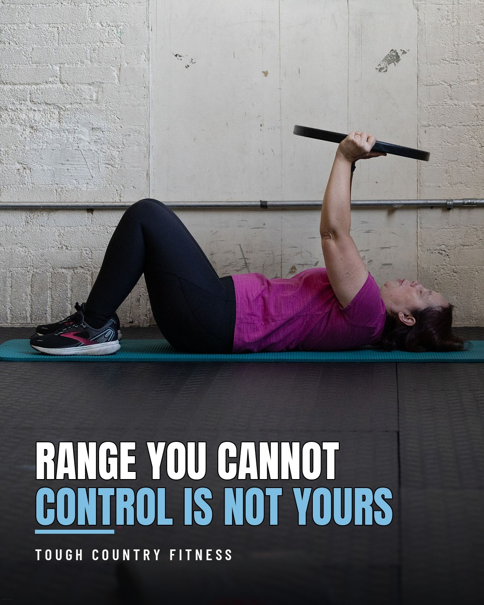
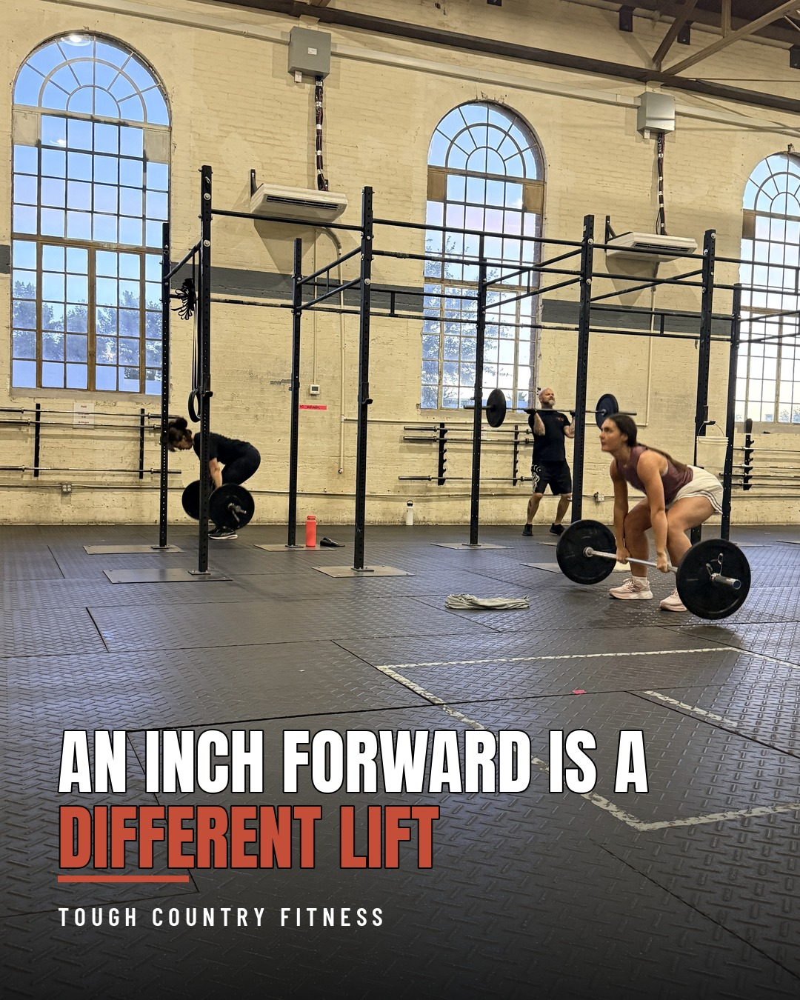
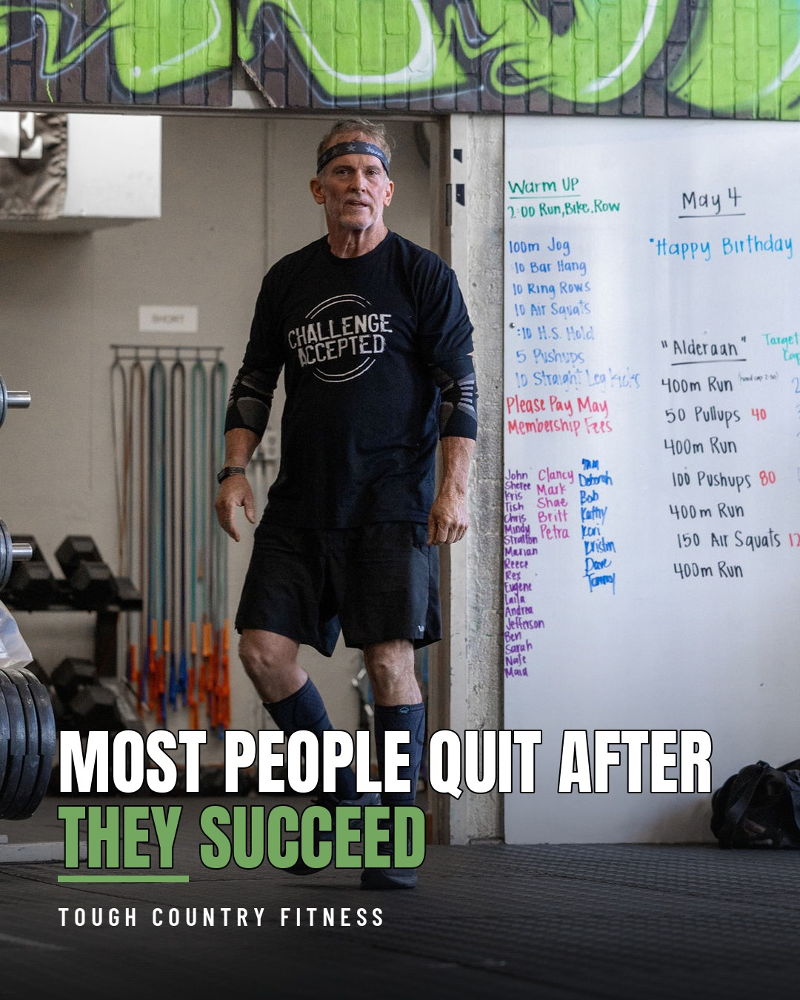
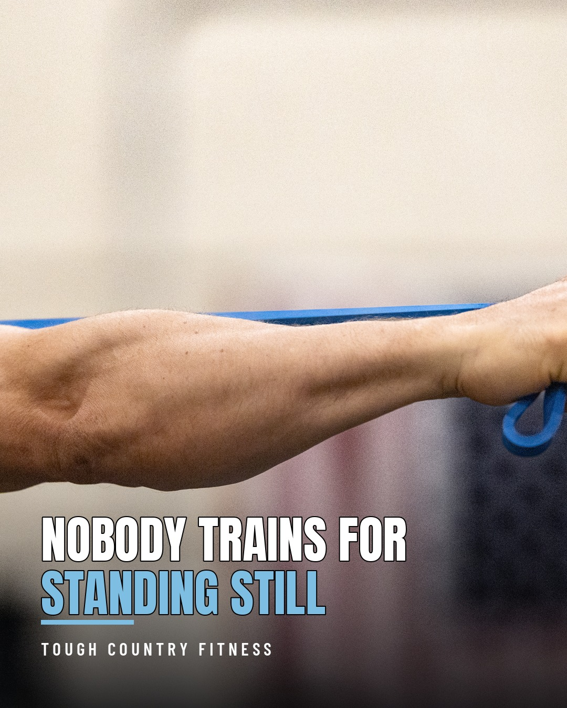
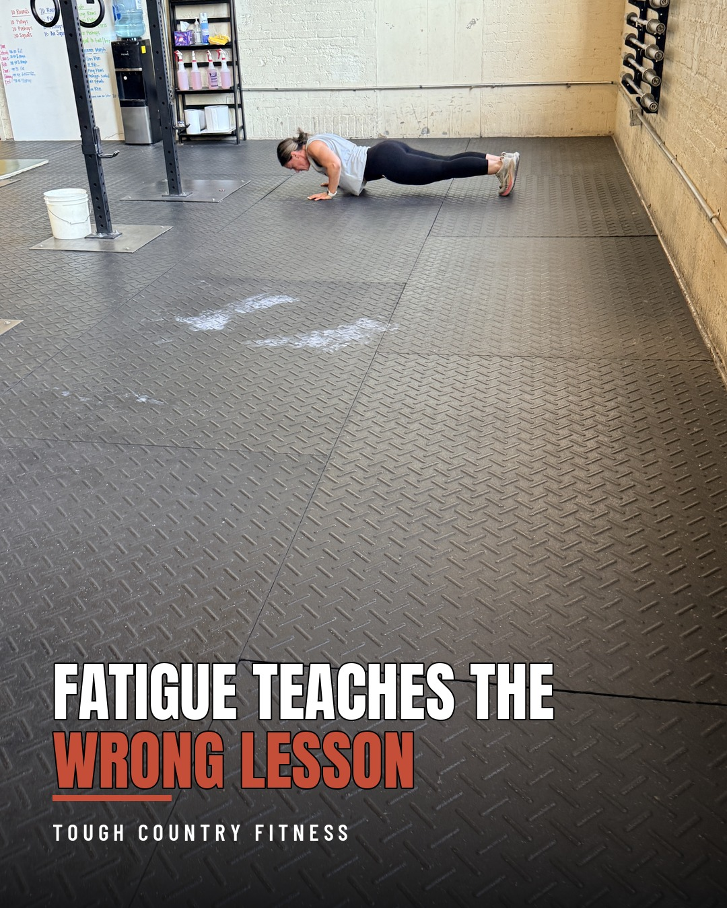
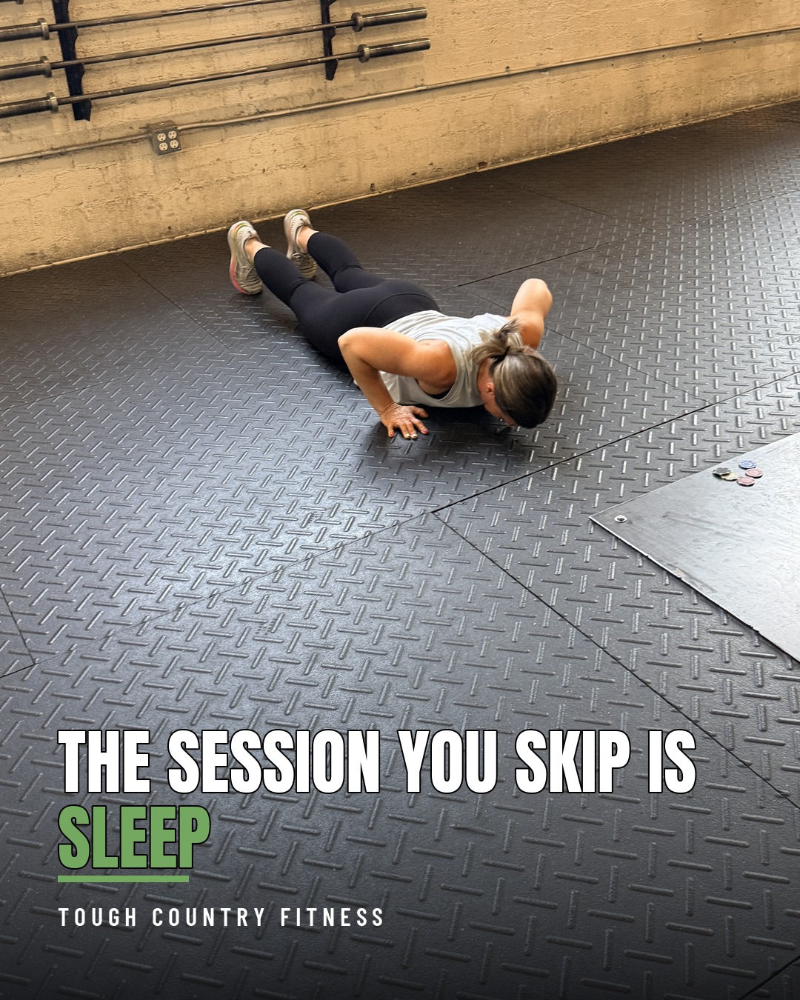
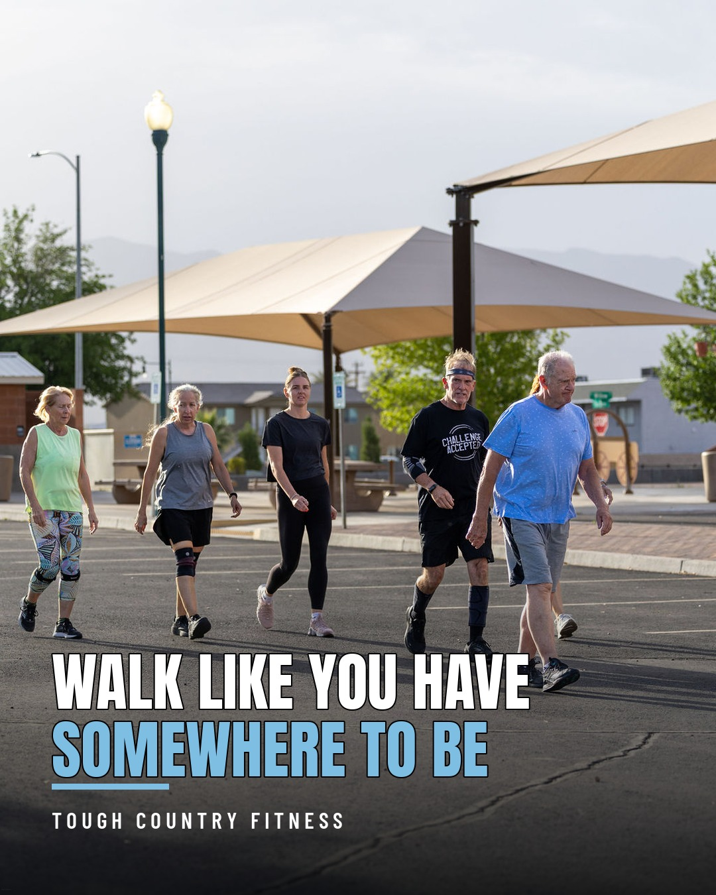

7 composites ready to promote · 5 ineligible · generated 2026-09-10

active range versus passive range, the end range you can reach and hold under your own power is the only range that shows up in real tasks, and stretching harder does not close the gap
There is the range someone can push you into, and the range you can reach on your own. 🧘 Only one of them shows up when you actually need it.
Passive range is what the joint allows when something else is doing the work: gravity, a strap, a coach leaning on you. Active range is what you can produce and hold with your own muscle. The gap between the two is the part your nervous system has no control over yet, and it will not let you load what it cannot control. That is why a person can lie down and drop their arms flat overhead with help, then lose three or four inches of it the second they hold a light plate. Nothing about the tissue changed in those two seconds. What changed is who was in charge.
So the fix is not a deeper stretch. It is owning what you already have. Get to the end of a range, take away the help, and hold it there under your own power for ten to twenty seconds. Lift the limb an inch past where it wants to stop and keep it there. A couple of minutes, three or four days a week, and the change shows up in the boring places: putting a suitcase in an overhead bin, reaching the top shelf without going up on your toes, catching something overhead without your ribs flaring out. 💪
If a position is painful rather than just hard, that is a conversation with your doctor and not something to work through on a mat.
What is something you can reach with help but not on your own?
Quick check you can run tonight: lie on your back with your knees bent and your low back flat to the floor, then raise your arms overhead. Wherever they stop before your ribs pop up is your honest overhead range. How far do your arms actually get?
A woman lies on a mat on the gym floor with her knees bent, pressing a black bumper plate overhead in front of a pale brick wall, with the words RANGE YOU CANNOT CONTROL IS NOT YOURS burned across the lower third above the TOUGH COUNTRY FITNESS wordmark.
photos/May05,2026untitled782.jpg · drafted 2026-09-04

bar path, a barbell that drifts an inch or two in front of midfoot adds lever arm to the lower back and turns a deadlift into a harder movement, so misses get blamed on strength when they are position
Plenty of missed deadlifts are not strength problems. They are geography problems. 🏋️
A barbell wants to travel straight up over the middle of your foot, because that is the line where you are balanced. Let it drift an inch or two out in front and you have quietly handed your lower back a longer lever, which does the same thing to you as loading extra weight you never put on the bar. The lift stops behaving like a deadlift and starts behaving like a slow good morning, and it usually falls apart somewhere around the knee. Then everybody goes hunting for a stronger back when the bar was simply in the wrong place.
The setup decides most of it. Bar over midfoot, shoulders a touch in front of it, arms hanging straight, then drag it up your legs instead of letting it swing away from you. Think about pushing the floor down rather than yanking the bar up. And film one working set from the side, because an inch is not something you can feel while you are under load and it is obvious the moment you watch it back. 📱 A little chalk dust on your shins tells the same story for free.
What is a lift you have never actually watched yourself do?
Worth knowing: the same rule governs the squat and the press, since every barbell is looking for that line over your midfoot whether it is in your hands or on your back. Does your bar stay against your shins on the way up, or has it always drifted out from you?
A woman sets up over a loaded barbell on the gym floor seen from the side, with a rig and tall arched windows behind her and two members training in the background, and the words AN INCH FORWARD IS A DIFFERENT LIFT burned across the lower third above the TOUGH COUNTRY FITNESS wordmark.
photos/IMG_4757.JPG · drafted 2026-09-04

goal completion is a common drop-off point because the structure that produced the habit is attached to the goal and disappears the day it is met, so the next block has to exist before the current one ends
The dangerous week is not week three. It is the week after you hit the goal. 🎯
Think about what a six week challenge, a race or a target number on a lift actually gives you. A deadline. A plan. A reason to be here on a Tuesday when you would rather not be. Every bit of that scaffolding is bolted to the goal, so the day you meet it, the scaffolding comes down at the exact moment the reward arrives. You take a week off, and you earned it. Then the second week is easy to justify too. By the third one it has stopped being a decision and started being a fact. Nobody sees it coming because it does not feel like failing. It feels like winning.
The fix costs about two minutes and it has to happen early. Before you start a block, decide what the first session after it looks like and put it on the calendar with the rest of them. It does not need to be ambitious. It needs to exist. 📅 The simplest version that works is to keep the days and the times exactly as they are and only swap the target: same Monday, Wednesday and Friday, new thing to chase. The days were never really about the goal anyway. The goal was borrowing them.
If you are in the middle of something right now with an end date on it, that end date is the part worth planning for. The training you do after it is the training that actually accumulates.
What happened the week after the last goal you really hit?
This shows up hardest after events with a finish line, which is why the weeks right after a race are where a lot of good training plans quietly end. What is the next thing you are working toward?
An older man in a CHALLENGE ACCEPTED shirt walks across the gym floor past a whiteboard covered in the day's workout and a list of member names, with the words MOST PEOPLE QUIT AFTER THEY SUCCEED burned across the lower third above the TOUGH COUNTRY FITNESS wordmark.
photos/May05,2026untitled313.jpg · drafted 2026-09-05

much of real physical work is static holding under load rather than reps through a range, a sustained contraction cuts its own blood supply so it fatigues on a different clock, and hold endurance has to be trained on purpose and measured in seconds
Your training is counted in reps. Your Saturday is counted in how long you can hold on. 💪
A rep travels. It moves through a range and hands the muscle a brief window at each end where the tension lets up and blood gets back in. A hold does nothing of the kind. The contraction stays on, and a muscle that stays contracted squeezes the vessels running through it, so it is working while partly cutting off its own supply line. That is why holding one end of a couch for forty seconds while somebody wrestles with a door can feel worse than a set of ten of almost anything. Real tasks are full of it: steadying a ladder, holding a drill overhead, carrying a sleeping kid up a flight of stairs, keeping a hose or a paint roller up long after your shoulder filed a complaint.
So train the thing directly, one or two pieces a week, on a clock rather than a rep count. ⏱️ Hang from the pull-up bar until your grip is done. Hold a barbell in the front rack for thirty to sixty seconds and feel where it starts to leak. Stand still with a heavy dumbbell in one hand and the other hand empty, and pay attention to what your ribs and hips do to keep you upright, because that is the exact job they have when you carry groceries in from the car. Pick times you can finish honestly and add about ten seconds a week.
Burning is normal in a hold. Numbness, tingling or a sharp pain is not, and that is a reason to stop and talk to your doctor rather than something to outlast.
What is the longest you have had to hold on to something lately?
A humbling benchmark that needs no equipment beyond a bar: hang and see whether you reach thirty seconds without renegotiating. When you hold something heavy, what gives out first, your grip or your shoulders?
A close crop of a forearm and fist gripping a blue resistance band stretched tight across the frame in the gym, with the words NOBODY TRAINS FOR STANDING STILL burned across the lower third above the TOUGH COUNTRY FITNESS wordmark.
photos/untitled-2.jpg · drafted 2026-09-05

motor learning does not pause under fatigue, so skill and heavy work practiced late in a session rehearse the compensation rather than the pattern, which is why technical work belongs in the first twenty minutes
The last three rounds of a hard workout are where most people quietly learn their worst habits. 😮💨
Motor learning does not switch off when you get tired. Every rep writes something down, including the ugly ones. So when you practice pull-ups at the back end of a conditioning piece, or drill a lift twenty minutes into a grinder, the pattern getting rehearsed is not the one on the whiteboard. It is the rounded back, the half kip, the pressed out finish. Do that twice a week for a month and the compensation is the movement now.
Which is why the order of a session is not decoration. Skill work and heavy singles belong in the first twenty minutes, while you can still hold a shape you would be happy to see on video. Conditioning goes after. If a workout deliberately buries a technical lift deep in a metcon, that is a different job with a different point, and the load comes down far enough that the shape survives the fatigue.
You still get to train tired. That is most of training. Just be clear about what you are actually practicing when you do. Which movement is the first to fall apart for you once the clock is running?
A useful check: film the same movement at the start of a session and again at the end of a hard one. Most people are surprised how little the two clips have in common. What goes first for you, grip, breathing or position?
A member holds a push-up position on the rubber gym floor with the whiteboard and water cooler behind her, and the words Fatigue teaches the wrong lesson run across the lower third above the Tough Country Fitness wordmark.
photos/IMG_5290.JPG · drafted 2026-09-05

sleep is a schedulable training input that people give away first, short sleep raises perceived effort so the same weight feels heavier without anything about fitness changing, and a fixed wake time backed into a bedtime is the lever rather than a longer weekend
You will defend a five thirty class against anything on the calendar, then give away an hour of sleep without a second thought. 🌙
That hour is not free. Run a few nights short and the first thing that moves is not your strength, it is your read on the effort. The same weight feels heavier, the same pace feels harder, and the set you would normally finish at two reps in reserve now feels like a limit. Nothing about your fitness changed overnight. Your gauge did. Grip on a bar, timing on a jump, patience with a lift that is not cooperating, all of it degrades quietly, and none of it announces itself as tiredness. It shows up as a bad session you then go looking for other reasons to explain.
The standing advice for adults sits at roughly seven to nine hours, and almost nobody gets there by hoping. Treat it the way you treat a class time. Pick the wake time you are actually stuck with, count backward, and that is your bedtime, not a suggestion. Hold the wake time steady across the weekend, because a two hour lie in on Saturday costs you Sunday night. Put the phone somewhere that requires standing up. If you have to choose between the last thirty minutes of something and a real night, the night wins more often than people expect. 🛏️
If you sleep the hours and still wake up wrecked, or you snore hard enough that somebody else has mentioned it, that is worth taking to a doctor rather than solving with an earlier alarm.
What time would you have to go to bed for your usual alarm to be seven hours away?
The strange part is that the bar does not know you slept five hours, so the number on it stays honest while your sense of it does not. When the week gets tight, which one do you protect first, the session or the sleep?
A member lies flat on the gym floor at the bottom of a push-up on black rubber tiles with barbells racked on the wall behind her, with the words THE SESSION YOU SKIP IS SLEEP burned across the lower third above the TOUGH COUNTRY FITNESS wordmark.
photos/IMG_5300.JPG · drafted 2026-09-05

comfortable walking pace is an output of leg strength, ankle range, balance and aerobic supply rather than a fixed personality trait, it sits near three miles an hour, and it moves when you deliberately walk faster
Most people have exactly one walking speed, and they have never once chosen it. 🚶 It settled there sometime in their twenties and nobody has looked at it since.
Comfortable pace for an adult lands somewhere around three miles an hour, roughly a twenty minute mile. That number is worth knowing because walking speed is not really a habit, it is an output. It reflects leg strength, ankle range, balance, and how efficiently the heart and lungs are supplying the whole operation. It gets used as a general marker of how somebody is holding up over the years for exactly that reason, because it quietly sums up all of those at once. Very little else you do in an ordinary day tests that many systems while asking so little of your schedule.
The useful part is that it answers when you ask it to. Pick a stretch you already cover regularly, the parking lot, the block, the hallway at work, and take it at a pace that makes holding a conversation slightly annoying. Not a jog. Just the speed of somebody who is late. Two or three minutes of that a few times through a walk is enough to make the effort real, and adding a hill or a bag carried in one hand makes it realer still. 🥾
What is your normal walking pace, and when did you last pick it on purpose?
A decent home version: time yourself over thirty feet at your normal pace, then time it again after a month of walking on purpose, because the second number usually moves further than people expect it to. Where do you walk regularly that has nothing to do with training?
Five members walk together across a sunlit parking lot past a shade structure and desert hills outside the gym, with the words WALK LIKE YOU HAVE SOMEWHERE TO BE burned into the lower third above the TOUGH COUNTRY FITNESS wordmark.
photos/May05,2026untitled678.jpg · drafted 2026-09-07
These predate the composites-only policy. They have no source photo and no rendered composite, and their images sit on the old Simpli host rather than in the repo. They cannot be promoted as-is, but they still count toward the 12-draft stop rule that blocked drafting.
| d06 | Simple Nutrition | Everyone counts protein, nobody counts fiber |
| d10 | Simple Nutrition | Your body barely notices what you drink |
| d14 | Simple Nutrition | The post workout window is hours, not minutes |
| d18 | Simple Nutrition | Every number you track has slop in it |
| d19 | Real-Life Fitness | Getting winded is normal, staying winded is the tell |